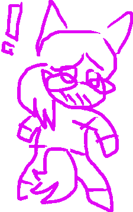
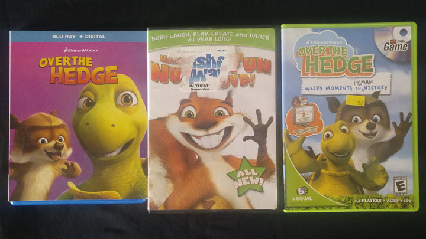

")

Some of my favorite media!
Here are some of my favorite media of all time (in no particular order) and with a brief rundown of what I like about each! You may notice a couple of patterns. I don't care to hide the clues to a particular conclusion you might come to. Simply put, you wouldn't be wrong, and labels don't scare me! :P
Due to timeline constraints, I only chose 5 things, and didn't include any games. You can learn about a few of my gaming ventures on the speedrunning pages if you want!
101 Dalmatian Street
I'll start with a bit of an underground pick. (Underground compared to some of the other picks, anyway.) This show focuses on the great-great-great (that's 3 greats) grandchildren of Pongo and Perdita from the original 101 Dalmatians films. It's a cute and artsy addition to the 101D franchise. I say artsy because I think it has an artistic vibe that's stylized but also easy on the eyes. It did a great job of expanding the 101D universe into the modern age and making technology present without forcing it as a centerpiece as a writing crutch (or for the sake of it.) My favorite part of the show is definitely the dynamic between the siblings, especially Dylan and Dolly.
101 Dalmatian Street went completely under the radar of most. It got one season that was released in 2019, then was canceled. Many believe it was because it had low ratings in the US. Disney really did it dirty by failing to properly promote it. I think it could have been highly beloved had it gotten a proper amount of eyes on it. I myself didn't hear about the show until years after it had ended. I think so much could have been done with the characters and the extension of the 101D world. I'm glad we got what we did though!
My Little Pony: Friendship Is Magic
I can already feel the judgment on this one. I'll tell you what the rest will tell you: No, it's not exclusively for little girls, and yes, it really is enjoyable for anyone open-minded enough to give it a try. The characters are all lovable in their own way. There's a ton of cast diversity (especially in later seasons) so there's bound to be somepony you identify with. The plot of some episodes is kinda mid, but I still have a huge appreciation for the adorable character interactions/development and the writing overall.
This is where I would put a YouTube embed of the MLP:FIM theme. BUT the "Allow embedding" setting for the video/channel has been disabled. Not that you're missing much; the theme song is one of the more divisive topics in the fanbase. I honestly don't mind it, but am willing to admit that without the nostalgia factor it might grate my ears a bit. If you really want, you can listen to the full two minute theme song here.
On the bright side, not being able to embed the song gave me a nice segue into talking about it!
I started watching MLP:FiM ten years ago, in 2014. If I cared to, I could try to pull the card that ten years ago, I was younger and closer to the target audience. But I wouldn't be fooling anyone, and like I said at the top of this page, I'm not afraid of the fact that I was (and am) just plain weird. I kept up with the show until it ended in 2019, and I'm still active in the remaining community to this day!
I'll do us both a favor and move on before I start talking about MLP gen 5...
I... I don't wanna talk about it, man. I don't wanna talk about it...
Bluey
I can imagine that this one might also elicit some judgment depending on what you've heard. Let me tell you: Bluey is PHENOMENAL. It is one of the most popular shows out there at the moment. It deserves every bit of praise it gets and more. The visuals, writing, and music are spot on. It only gets better as the show goes on. What Ludo Studios can do to make it so engaging with only seven minutes per episode, and no overarching plot, is nothing short of incredible. The show manages to encompass childhood glee and wonder, and still tackle some serious subject matter (and make me shed a tear for a few episodes.) It only gets better and better as you learn more about the world, make new connections, and experience everything alongside the characters.
My only regret regarding this show is that it took me so long to give it a shot. I thought after MLP:FiM that there was no way I could become invested in a "kids show" now that I've become an adult, but I was so wrong. It fills my heart with joy to know that a cartoon as good as this one exists in light of the current landscape of media for children. After I got up to date on all of the episodes, I shared the show with my mother, and she also loves it. (If a modern cartoon gets the seal of approval from generation X, you know it's gotta be good!!!)
Jungledyret Hugo
Now, this franchise I can be almost SURE you haven't heard of, or at least not by this name, (unless you happen to be from Scandinavia.) It's nothing to rave about on the surface; it's a tale of two animals from totally different worlds becoming best friends and going on adventures together. Call me a sucker for enjoying a trope like that, but I do sincerely enjoy the story it tells. The series consists of two traditionally animated films, an MS-DOS game, a TV series, and a third CGI film (that everyone wishes they could forget.)
(Note: I didn't use an official Youtube source for Jungledyret media because there isn't one.)
This franchise has quite a history that I don't want to act like an expert on. I would rather you learn first from Dan Harder's animation blog if you're interested. He has a ton of cool posts, not only about the history and creation of Jungledyret Hugo, but a ton of other animation project insights too!
On top of my appreciation for the story and history, I regard the media itself as a work of art. The traditional animation is a treat to look at. It's a relic of when animation was beautiful because the human element that went into making it was not only intrinsic to it, but proudly on display as you watched it. I find it a great shame that this franchise, particularly the first two films, never got worldwide fanfare in their heyday. It really could have become a world-renowned franchise, but instead, everywhere outside of Scandinavia only got a poorly localized, cut and diminished release, several years after the original film's debut.
By far the most tragic thing: the original, uncut Danish version of the films and episodes are impossible to find with complete and accurate English subtitles. You'd be hard pressed to find them even if you could be sure they exist. (And you can be sure for the majority of this franchise that they don't.) Just another case of lost media, or rather, media that is lost to a lot of the world because it was poorly localized and/or never properly translated. A darn tragedy, to be sure...
Over the Hedge
If you've seen this movie, I think you'll agree that it is a certified 2000's classic. It's got EVERYTHING: the charming CGI animation that was great in its time and still holds up; the comedy, from the simple gags to the running mockery of 21st century consumerism; the bop of a soundtrack with original songs by none other than Ben Folds; the celebrity names cast in voice roles that made you go "Huh? Why would they-?" until you experienced their characters and were like "Oh, yeah. No one else could do a character like that"–
There is nothing else quite like Over the Hedge. It captures the essence of an era so well that despite having zero recollection of watching the film when I was three years old, it made me feel nostalgic the "first" time I watched it in 2020. (Yes: it took me until covid lockdown to take the time to truly experience a masterpiece like Over the Hedge. And no: you don't have to tell me; I know I'm a poser.)
I was going to embed a trailer from YouTube, but Over the Hedge's time was well before YouTube was the go-to for publishing movie trailers. But I'm sure you know what Over the Hedge is anyways... right...?
Screw it. Here's a photo of my Over the Hedge media collection:
This is the part where I say something about how I wish it had become a franchise, with sequels or a spinoff, and I cry because "celebrity casting killed it" or whatever. And sure, its greatness and success deserved as many expansions as a Dreamworks franchise like Shrek or Kung Fu Panda, or... Madagascar. (LOL... Madagascar.)
But you know what? I think the Over the Hedge "franchise" is perfect as it is. It got a one-of-a-kind movie, and a respectable promotional video game sequel*, (which was a product of the time; releasing a promotional video game alongside a movie was just something you did back then!) It did only what it had to in order to accomplish something great. Thanks to its brevity and restraint, it's gotten away with not only standing the test of time, but doing so as an all-time classic.
Bonus merch content:
It's not often I actually go out of my way to find or buy merchandise but I do have a few things I've gathered over the years. Namely, a Dolly plush, a Chilli plush and a Rainbow Dash beanie that I never leave home without. (I have some other stuff, but nothing worth the effort to show off.)